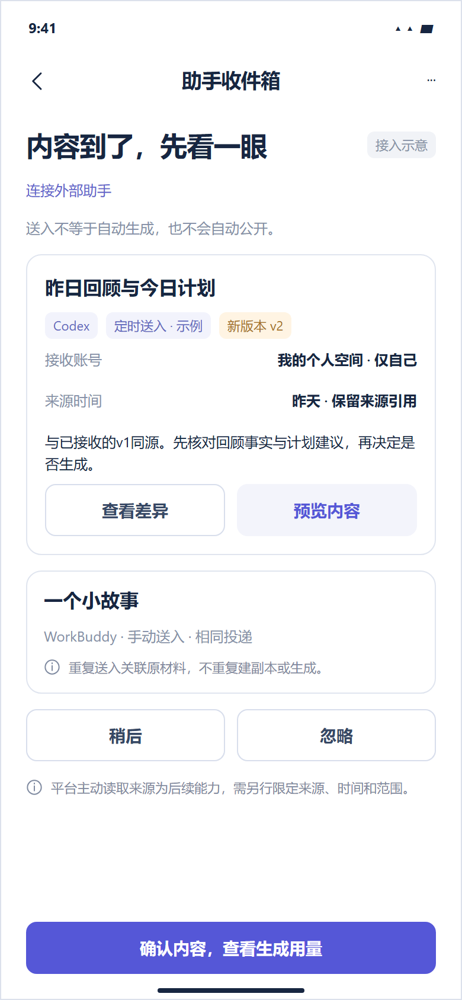
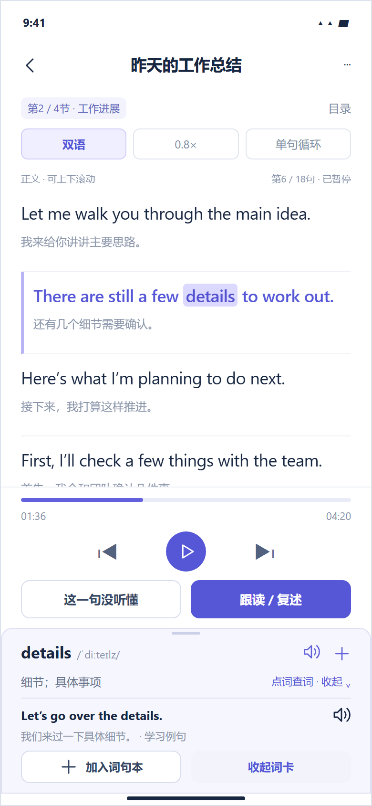

<!doctype html><html lang="zh-CN"><meta charset="utf-8"><style>*{box-sizing:border-box}body{margin:0;width:1708px;height:1002px;padding:28px 38px;background:#eff2f7;font-family:'Microsoft YaHei UI','Segoe UI',sans-serif;color:#16223d}header{display:flex;align-items:baseline;gap:22px;margin-bottom:26px}h1{font-size:25px;margin:0}header span{font-size:12px;color:#71809b}main{display:flex;gap:24px}figure{margin:0;width:390px}figcaption{height:32px;font-size:14px;white-space:nowrap}img{display:block;border:1px solid #d8dfec;border-radius:18px}footer{font-size:11px;color:#71809b;margin-top:14px}</style><header><h1>拾语 · 生成、Agent与逐句听读</h1><span>完整关键流程原型 v0.13</span></header><main><figure><figcaption>M09 · 处理任务与恢复</figcaption></figure><figure><figcaption>M10 · 助手收件箱</figcaption></figure><figure><figcaption>M11 · 按钮下方 · 两行词卡</figcaption></figure><figure><figcaption>M12 · 按钮保留 · 词卡展开</figcaption></figure></main><footer>设计示例；外部服务、评测、跨端及平台发布尚未接入验证。每页另附2倍高清单图。</footer></html>